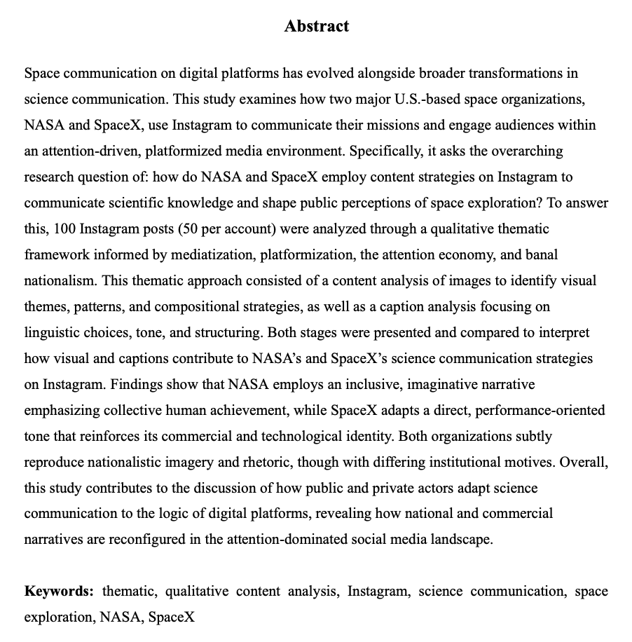
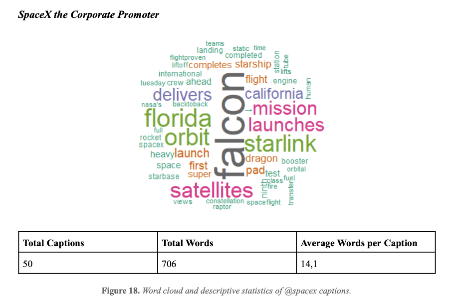
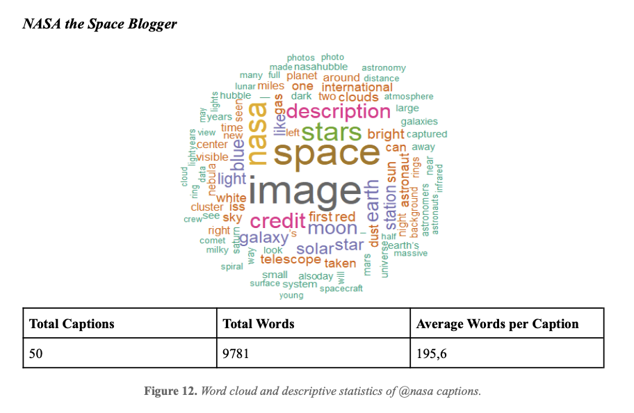
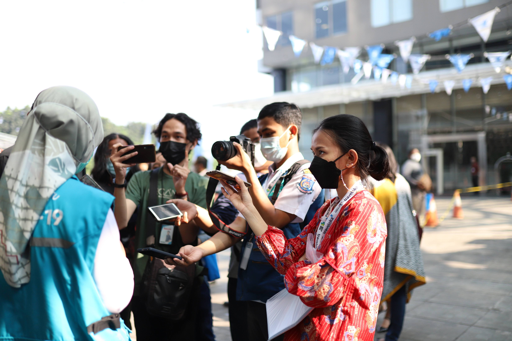
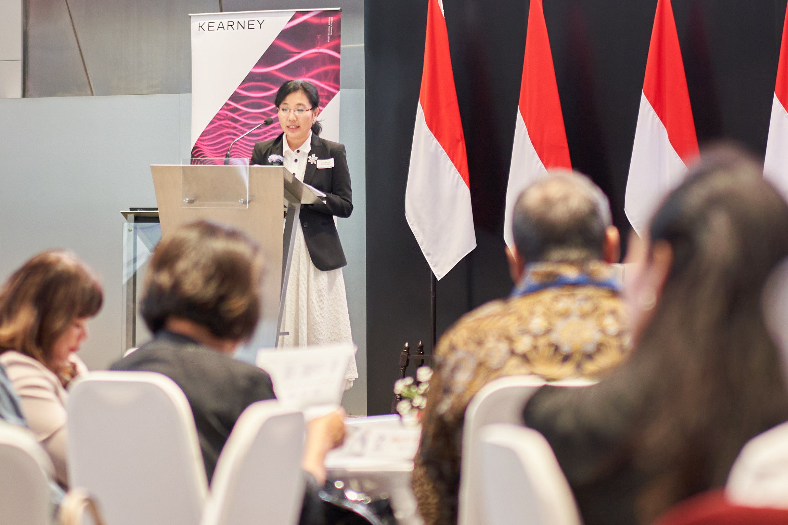
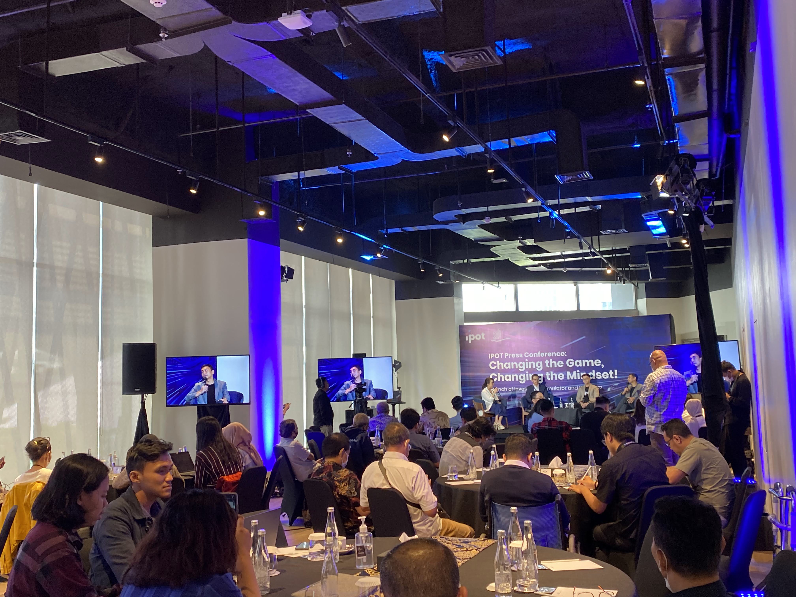
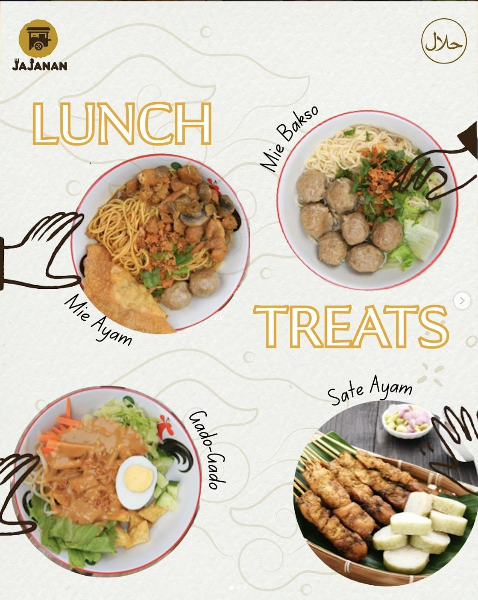
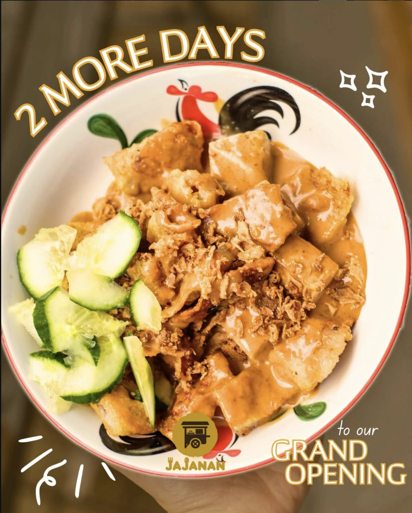

Profile
Master's graduate in Media Studies (Datafication) with hands-on experience in operational communications, data-driven reporting, and cross-functional stakeholder coordination. Proven track record producing recurring communications for 18 international airlines across 50+ countries. Skilled in data visualization (RStudio, Excel), executive presentations, and translating complex data into executive-ready narratives.
Experience
2025 — 2026
- Owned monthly operational communications for 18 member airlines, synthesising cross-functional inputs into structured, executive-ready materials on a recurring cadence
- Developed and maintained communication templates and visual guidelines ensuring consistency across all stakeholder outputs
- Coordinated quarterly corporate events, managing logistics, timelines, and cross-departmental alignment across international teams
- Streamlined content production workflows, reducing output time by 25% through improved coordination processes
2021 — 2022
- Generated weekly recruitment analytics reports tracking 200+ monthly applications across multiple hiring pipelines
- Created data visualizations and dashboards using Excel to present hiring metrics to regional leadership
- Coordinated communications between HR, hiring managers, and candidates across multiple office locations
2021
- Drafted press releases, executive presentations, and data-backed client reports for tech and corporate clients
- Managed simultaneous projects across multiple stakeholders, delivering communications materials under tight deadlines
- Supported crisis communications with rapid-response content and stakeholder briefing documents
2025 (Freelance)
- Built Instagram presence from scratch, achieving 10% engagement rate through authentic Indonesian food storytelling
- Created content highlighting Indonesian cuisine, driving community interest that contributed to successful opening day
Education
Master's in Media Studies (Datafication)
University of Groningen
2023 — 2026 | Thesis: NASA vs SpaceX Instagram communication analysis (graded 8.8)
Bachelor's in International Relations
Universitas Katolik Parahyangan, Indonesia
2016 — 2020
Skills & Expertise
Reporting & Analytics
Operational Reporting
Data Visualisation
Power BI (basic)
Excel & Pivot Tables
RStudio
Google Analytics
Communications & Presentations
Executive Presentations
AI-assisted Content
Stakeholder Management
PowerPoint
Canva
Press Releases
Coordination & Operations
Multi-site Communication
Project Coordination
Process Documentation
Notion
HubSpot
Meltwater
Languages
🇬🇧 English — Fluent
🇮🇩 Indonesian — Native
🇳🇱 Dutch — Conversational (A2-B1)
Thesis: NASA vs SpaceX Science Communication Analysis
Conducted qualitative thematic analysis of 100 Instagram posts from NASA and SpaceX. Applied word cloud visualization and descriptive statistics in RStudio to analyze caption language, frequency, and communication strategies. NASA averaged 195.6 words/caption (storytelling-focused), while SpaceX averaged 14.1 words/caption (performance-oriented).
data visualization
RStudio
science communication
aerospace
content analysis
NASA
SpaceX

Thesis Abstract — Strategic Science Communication Analysis

SpaceX Word Cloud — Performance-focused communication

NASA Word Cloud — Storytelling-focused communication
Selected Work Samples: SkyTeam Airline Alliance
📱 Instagram Campaign Content

Member Airline Collaboration

Brand Awareness Content

Engagement Post
📰 In-Flight Articles & Newsletters

In-Flight Article — January 2026 Edition

InHouse & InTouch Newsletter — February 2025
Event Communications: Occam Komunikasi
📅 Event Coverage & PR

Traveloka COVID-19 Vaccination Initiative

Kearney Empowering Women Event

IPOT Virtual Trading Launch
Brand Launch: Jajanan Indonesian Street Food
Led brand development and social media strategy for Indonesian restaurant launch in Groningen. Created visual identity and content strategy achieving 10% engagement rate.

Brand Launch Campaign

Menu Showcase
Concept Project: Operational Communications Dashboard
A self-initiated concept project demonstrating operational data visualisation and reporting skills. Built to simulate a real-world multi-site manufacturing communications environment. Shows how raw performance data can be translated into executive-ready insights.

Scan to download dashboard
Excel file available at: priscillapuspita.github.io/portfolio